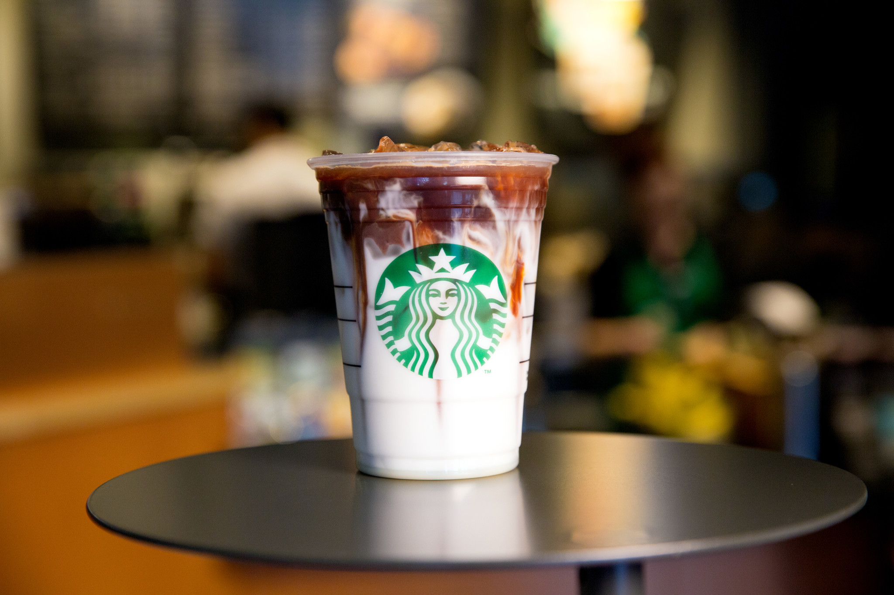
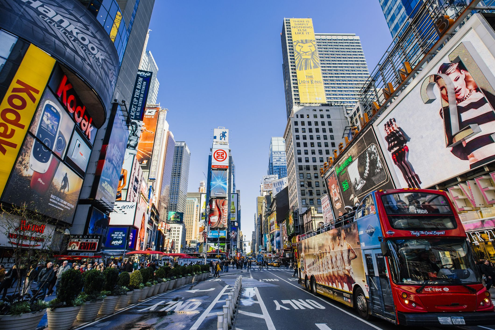
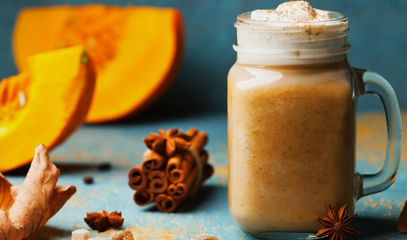
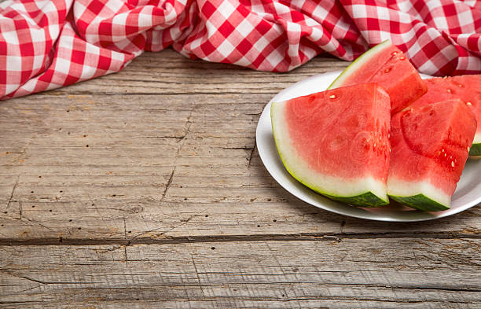
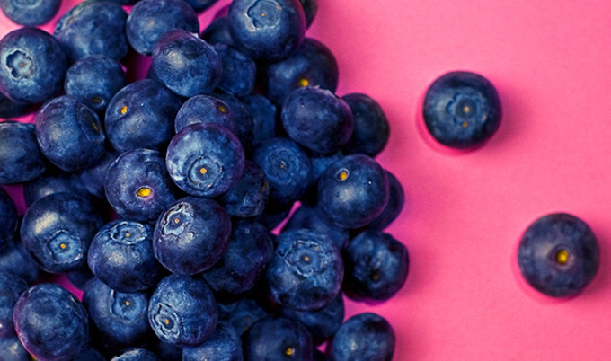

Tastiest Vegan Fraps at Starbucks
A Vegan Barista guides you toward your own cool and creamy cruelty-free creations.

Your Guide to Vegan Eats in NYC
Plan the perfect trip to New York with a few of these delicious vegan restaurants

THE ULTIMATE VEGAN GUIDE TO GETTING YOUR FALL PUMPKIN SPICE FIX
Autumn ushers in a sweet and spicy array of pumpkin-flavored treats to enjoy as days grow cooler.

4 Mistakes Vegans Make About Their Health
Being vegan is beneficial for your health, animals, and the environment, but that doesn’t mean you won’t make mistakes along the way.
How to Plan the Perfect Vegan Picnic
End the summer heat with a memorable outdoor meal that can happen at a moment’s notice.

10 Vegan Superfoods You Can't Afford to Miss in 2018
Start 2018 off right by ditching the vegan junk food and raiding the produce section.
